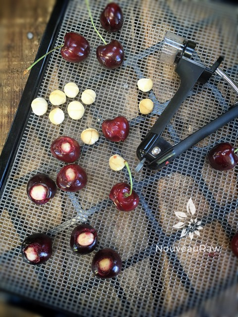

Macadamia Cherry Relleno
 ~ raw, vegan, gluten-free)~
~ raw, vegan, gluten-free)~
You know… I would love to see a macadamia nut tree. They are large, spreading evergreen trees reaching 30 to 40 ft. high and almost as wide. That would have been a tree-climbing dream of mine growing up! The leaves are 8 to 11 inches in length and occur usually in whorls of 3.
Macadamia nuts have a very hard seed coat enclosed in a green husk that splits open as the nut matures. It holds a creamy white kernel containing up to 80% oil and 4% sugar. Due to their high-fat content, it is important to store them properly so they don’t go rancid. I store mine in a mason jar and keep it in the freezer.
These orbs of scrumptiousness will have your taste buds dancing! The flavors of all three components are mild on their own but together they sing in harmony. The slight sweetness, the pairing of the crunchy texture of the nut, and the chewiness of the dried cherry will cause an orgasmic explosion in your mouth. Yes, mom, I said the word “orgasmic” on my blog. lol Before I get to blushing too much, let’s go ahead and take a look at the recipe. :)
Ingredients:
- Wash, remove the stems and pits from the cherries. Here I used Bing Cherries. They will need to be large enough to house a macadamia nut!
- Stuff a macadamia nut into each cherry. Place the stuffed cherry on the mesh sheet that comes with the dehydrator.
- Dehydrate at 145 degrees (F) for 1 hour, then reduce the temperature to 115 degrees (F) and continue to dry for approximately 24 hours or until dry. Remove and allow them to cool to room temperature.
- If making this raw – Prepare the hardening chocolate recipe.
- If using store-bought chocolate chips –
- Melting in a double boiler – Bring the water to a simmer, pour the bag of chocolate chips into your double boiler.
- Stir constantly, once most of the chocolate chips are melted reduce the heat to the lowest setting. Continue stirring until all of the chocolate is melted.
- Be careful that you don’t allow any moisture into the pan, this will cause your chocolate to seize.
- Once melted, turn the heat off and start dipping your cherries.
- Dip each dried stuffed cherry into the chocolate, coating it well, tap off the excess chocolate.
- I used a small fork as a platform to hold the cherry, tap it on the side of the bowl, scrape the bottom of the fork with the edge of the spatula and slide the cherry onto the tray with a toothpick.
- Place on a solid surface (etc. cutting board, tray, teflex sheet, wax paper).
- Allow the chocolate to harden. DO NOT place in the fridge to harden. The moisture can cause white streaks on your chocolate. Place them in a cool spot of the house to harden.
- Store in an airtight container.
Culinary Explanations:
- Why do I start the dehydrator at 145 degrees (F)? Click (here) to learn the reason behind this.
- When working with fresh ingredients it is important to taste test as you build a recipe. Learn why (here).
- Don’t own a dehydrator? Learn how to use your oven (here). I do however truly believe that it is a worthwhile investment. Click (here) to learn what I use.

Remove the pits from the cherries and gentle shove a macadamia nut inside of the cherry. Place on the dehydrator try and dry. Once done, drown in chocolate, allow to set, then ENJOY!

Dip in chocolate and place on parchment paper to dry.
© AmieSue.com